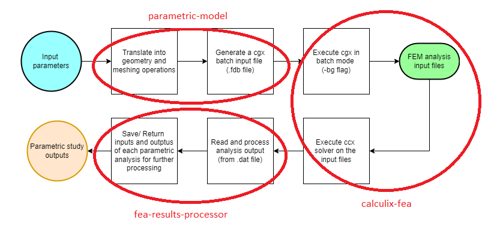

3. 链接组件分析#
 加载教程到dapta应用程序
加载教程到dapta应用程序 在Github中查看文件
在Github中查看文件预计时间：45分钟
在本教程中，我们探讨了连接的用法：将组件的执行链接起来。
该示例还介绍了一个关于有限元分析的特定组件API ：calculix-fea-comp。
{kind=link}
3.1. 创建组件#
本示例复制了参数化机翼模型系列 第1与2部分中介绍的链接分析。我们利用Python和开源软件CalculiX GraphiX 创建了一个受静态尖端载荷作用的复合材料机翼的参数化有限元模型， 然后使用CalculiX CrunchiX进行分析。
我们展示了如何将之前的单体Python代码分割成离散的、具有潜在重用价值的组件。 详细的Python代码在之前的视频和相关博客文章中已经涵盖 （见参考文献1和2）。
我们将参数化模型分析过程分为三个不同的组件，如下图所示。
{kind=link}
3.1.1. 参数化模型组件#
参数化模型组件使用Python定义参数化三维机翼几何形状。它还会为Calculix GraphiX输出.fdb文件格式的网格生成指令。
该组件的参数包括机翼的展长和弦长，以及通过上传包含 x 和 y 截面坐标的CSV输入文件定义的翼型横截面。
创建组件：
在工作区中单击右键，选择
添加空节点。选择空组件进行编辑。在
属性选项卡中，填写组件名称为parametric-model，并选择通用的Python组件APIgeneric-python3-comp:latest。将下面的
setup.py、compute.py、requirements.txt和naca0012.csv文件内容复制到文本编辑器中，并在本地保存。 然后在属性选项卡下上传前三个文件，在参数选项卡下通过选择上传用户输入文件来上传naca0012.csv文件。在
属性选项卡中，勾选开始节点选项的复选框。将下面的参数JSON对象内容复制到
参数选项卡的文本框中。将以下JSON对象复制到
输出选项卡的文本框中：
{
"files.cgx_file": "default"
}
选择
保存数据保存并关闭组件。
from datetime import datetime
from pathlib import Path
def setup(
inputs: dict = {"design": {}, "implicit": {}, "setup": {}},
outputs: dict = {"design": {}, "implicit": {}, "setup": {}},
parameters: dict = {
"user_input_files": [],
"inputs_folder_path": "",
"outputs_folder_path": "",
},
) -> dict:
"""A user editable setup function."""
response = {}
# set default inputs
if inputs:
for input_key, input_value in inputs["design"].items():
if input_value == "default":
try:
inputs["design"][input_key] = parameters[input_key]
except Exception as e:
print(f"Could not find {input_key} in the input parameters.")
response["inputs"] = inputs
message = f"{datetime.now().strftime('%Y%m%d-%H%M%S')}: Setup completed."
print(message)
response["message"] = message
return response
from datetime import datetime
from pathlib import Path
import csv
from math import ceil
import numpy as np
import matplotlib.pyplot as plt
PLOT_FLAG = True
def compute(
inputs: dict = {"design": {}, "implicit": {}, "setup": {}},
outputs: dict = {"design": {}, "implicit": {}, "setup": {}},
partials: dict = {},
options: dict = {},
parameters: dict = {
"user_input_files": [],
"inputs_folder_path": "",
"outputs_folder_path": "",
},
) -> dict:
"""Editable compute function."""
# check input files have been uploaded
inputs_folder = Path(parameters["inputs_folder_path"])
if not (inputs_folder / parameters["airfoil_csv_file"]).is_file():
raise FileNotFoundError(
f"{parameters['airfoil_csv_file']} needs to be uploaded by the user."
)
print("Starting user function evaluation.")
component_inputs = parameters # default values
run_folder = Path(parameters["outputs_folder_path"])
if inputs:
for input_key, input_value in inputs["design"].items():
component_inputs[input_key] = input_value
geometry = get_geometry(
component_inputs, run_folder, inputs_folder, plot_flag=PLOT_FLAG
)
cgx_fdb_path = get_cgx_input_file(geometry, component_inputs, run_folder)
# check output has been saved
if not cgx_fdb_path.is_file():
FileNotFoundError(f"{str(cgx_fdb_path)} is not a file.")
outputs["implicit"]["files.cgx_file"] = cgx_fdb_path.name
message = f"{datetime.now().strftime('%Y%m%d-%H%M%S')}: Created cgx fdb file {cgx_fdb_path.name} with span {str(component_inputs['span'])}m."
print(message)
return {"message": message, "outputs": outputs}
def get_geometry(inputs, run_folder, inputs_folder, plot_flag=False):
"""Translate parameters into geometry description that CGX can understand,
that's points, lines and surfaces."""
if "airfoil_cut_chord_percentages" not in inputs:
inputs["airfoil_cut_chord_percentages"] = None
aerofoil = _get_aerofoil_from_file(
Path(inputs_folder, inputs["airfoil_csv_file"]),
plot_flag=plot_flag,
splitpc=inputs["airfoil_cut_chord_percentages"],
run_folder=run_folder,
)
points, seqa, split_points = _get_cgx_points_3d(
aerofoil, inputs["chord"], inputs["span"]
)
lines, rib_surfaces, aero_surfaces, bodies, aero_surfaces_flip = _get_cgx_lines_3d(
seqa,
nele_foil=rint(inputs["nele_foil"]),
nele_span=int(inputs["nele_span"]),
split_points=split_points,
filled_sections=inputs["filled_sections_flags"],
)
return {
"aerofoil": aerofoil,
"points": points,
"point_seqa": seqa,
"lines": lines,
"surfaces": {
"ribs": rib_surfaces,
"aero": aero_surfaces,
"aero_surfaces_flip": aero_surfaces_flip,
},
"bodies": bodies,
}
def get_cgx_input_file(geometry, inputs, folder):
"""Write CGX batch commands to file."""
fdb_geom_file = folder / "cgx_infile.fdb"
if "boundary_conditions" in inputs:
fix_lines = rint(inputs["boundary_conditions"]["fix_lines"])
loaded_lines = rint(inputs["boundary_conditions"]["loaded_lines"])
if "loaded_surfaces" in inputs["boundary_conditions"]:
loaded_surfaces = rint(inputs["boundary_conditions"]["loaded_surfaces"])
else:
loaded_surfaces = None
else:
fix_lines = None
loaded_lines = None
loaded_surfaces = None
# create string of all input commands
cgx_commands = _get_commands(
geometry,
fix_lines,
loaded_lines,
loaded_surfaces=loaded_surfaces,
merge_tol=inputs["node_merge_tol"],
cgx_ele_type=int(inputs["cgx_ele_type"]),
solver=inputs["cgx_solver"],
)
# write string of commands to file
with open(fdb_geom_file, "w", encoding="utf-8") as f:
f.write("".join(cgx_commands))
return fdb_geom_file
########### Private functions that do not get called directly
def rint(items):
# cover integer values after json import
return [int(item) for item in items]
def _get_aerofoil_from_file(
file, plot_flag=True, splitpc=None, pt_offset=6, run_folder=None
):
"""
This function reads an aerofoil geometry from csv and calculates tc_max.
Args:
file: file with xy-positions of the airfoil outline in Selig format.
For example http://airfoiltools.com/airfoil/seligdatfile?airfoil=n0012-il
Returns:
airfoil data
"""
# read aerofoil input file
airfoil = []
with open(file, mode="r", encoding="utf-8") as infile:
reader = csv.reader(infile, skipinitialspace=True)
for row in reader:
airfoil.append(row)
name = airfoil[0]
coordinates = np.array([string[0].split() for string in airfoil[1:]], dtype=float)
# replace the last coordinate to close the airfoil at the trailing-edge
coordinates[-1] = coordinates[0]
# we assume that there is a [0.0, 0.0] point in the airfoil
LE_index = np.where(coordinates[:, 0] == 0.0)[0][0]
leading_edge_pt = LE_index
splits = []
if splitpc:
# check that there are enough points to split the section
min_points = 100
if len(coordinates) < min_points:
raise ValueError(
"The parameter 'airfoil_cut_chord_percentages' requires "
f"at least {min_points:d} airfoil spline points in 'airfoil_csv_file'"
)
# re-order the pc from TE to LE
splitpc.sort(reverse=True)
# trim points that are within min number of points form leading or trailing edge
trimmed_coords = np.hstack(
[np.array([np.arange(len(coordinates))]).T, coordinates]
)
trimmed_coords = np.vstack(
[
trimmed_coords[pt_offset : int(LE_index - ceil(pt_offset / 2)), :],
trimmed_coords[int(LE_index + ceil(pt_offset / 2)) : -pt_offset, :],
]
)
# find two points that match the percentage chord closely
for split_number, split in enumerate(splitpc):
point_distances_x = np.abs(trimmed_coords[:, 1] - split / 100)
pt = {"top": 0, "bot": 0}
dist_top = point_distances_x[0]
dist_bot = point_distances_x[-1]
for index, dist in enumerate(point_distances_x):
if dist < dist_top and trimmed_coords[index, 2] > 0:
pt["top"] = int(trimmed_coords[index, 0])
dist_top = dist
if dist < dist_bot and trimmed_coords[index, 2] < 0:
pt["bot"] = int(trimmed_coords[index, 0])
dist_bot = dist
if split_number >= 1:
# check number of points separating splits
if (
np.abs(pt["top"] - splits[-1]["top"]) < pt_offset
or np.abs(pt["bot"] - splits[-1]["bot"]) < pt_offset
):
raise ValueError(
f"Values {splitpc[split_number-1]} and {split:f} in "
"'airfoil_cut_chord_percentages' are too close together."
)
splits.append(pt)
if plot_flag:
plt.plot(coordinates[:, 0], coordinates[:, 1], "-xr")
if splitpc:
for split in splits:
plt.plot(
[coordinates[split["top"], 0], coordinates[split["bot"], 0]],
[coordinates[split["top"], 1], coordinates[split["bot"], 1]],
"-b",
)
plt.xlabel("x")
plt.ylabel("y")
plt.title(name)
plt.savefig(str(run_folder / "airfoil_coordinates.png"))
return dict(
name=name,
coordinates=coordinates,
splits=splits,
leading_edge_pt=leading_edge_pt,
)
def _get_cgx_points_3d(aerofoil, chord, span):
"""This function generates the CGX input file points and point sequences."""
if not isinstance(span, list):
span = [span]
if not isinstance(chord, list):
chord = [chord]
def wing_with_splits(aerofoil, chord, span):
seqa = []
starting_y = 0
pt_counter = 0
split_points = np.empty((len(aerofoil["splits"]), 2, 0), dtype=int)
for section_index, length_y in enumerate(span):
x = aerofoil["coordinates"][:, 0] * chord[section_index]
z = aerofoil["coordinates"][:, 1] * chord[section_index]
if section_index == 0: # only needed at the root of the wing
y_root = np.ones(x.size) * starting_y
points = np.vstack([x, y_root, z]).T
# section tip
y_tip = np.ones(x.size) * (starting_y + length_y)
points = np.append(points, np.vstack([x, y_tip, z]).T, axis=0)
def airfoil_seqa(pt_counter, seqa, all_split_points, x_size):
# SEQA for first airfoil top splines
pt = 0
split_points = []
for split in aerofoil["splits"]:
indices = np.arange(pt_counter + pt + 1, pt_counter + split["top"])
seqa.append(indices)
pt = split["top"]
split_points.append(pt_counter + split["top"])
# SEQA for first airfoil LE spline
seqa.append(
np.arange(
pt_counter + pt + 1,
pt_counter + aerofoil["leading_edge_pt"],
)
)
if any(aerofoil["splits"]):
seqa.append(
np.arange(
pt_counter + aerofoil["leading_edge_pt"] + 1,
pt_counter + aerofoil["splits"][-1]["bot"],
)
)
# SEQA for first airfoil bot spline
pt = x_size - 1
bot_seqa = []
for split in aerofoil["splits"]:
indices = np.flipud(
np.arange(
pt_counter + pt - 1, pt_counter + split["bot"], -1
)
)
bot_seqa.append(indices)
pt = split["bot"]
split_points.append(pt_counter + split["bot"])
bot_seqa.reverse()
seqa += bot_seqa
# all_split_point is nested list of dim 3: aerofoil -> split -> point
all_split_points = np.dstack(
[
all_split_points,
np.reshape(split_points, (len(aerofoil["splits"]), 2)).T,
]
)
else:
seqa.append(
np.arange(
pt_counter + aerofoil["leading_edge_pt"] + 1,
pt_counter + x_size - 2,
)
)
all_split_points = []
return seqa, all_split_points
seqa, split_points = airfoil_seqa(
pt_counter=pt_counter,
seqa=seqa,
all_split_points=split_points,
x_size=x.size,
)
if section_index == 0: # only needed at the root of the wing
seqa, split_points = airfoil_seqa(
pt_counter=pt_counter + x.size,
seqa=seqa,
all_split_points=split_points,
x_size=x.size,
)
starting_y += length_y
pt_counter = seqa[-1][-1] + 2
return points, seqa, split_points
points, seqa, split_points = wing_with_splits(aerofoil, chord, span)
return points, seqa, split_points
def _get_cgx_lines_3d(
seqa,
nele_foil=20,
nele_span=40,
nele_split=4,
split_points=None,
filled_sections=None,
):
"""This function creates the aerofoil section splines and the spanwise bounding lines in CGX."""
nele_multiplier = 2 # =2 to account for quadratic elements
lines = []
aero_surfaces = []
aero_surfaces_flip = []
rib_surfaces = []
if not isinstance(nele_span, list):
nele_span = [nele_span]
if not isinstance(nele_foil, list):
nele_foil = [nele_foil]
if not isinstance(filled_sections, list):
filled_sections = [filled_sections]
splits = 0
seqas_per_aerofoil = 2
if isinstance(split_points, np.ndarray):
splits = split_points.shape[0]
seqas_per_aerofoil = splits * 2 + 2
aerofoils = int(len(seqa) / seqas_per_aerofoil)
airfoil_index = 0
lcounter = 0
for seqa_id, seq in enumerate(seqa):
# aerofoil lines
lines.append(
[
seq[0] - 1,
seq[-1] + 1,
seqa_id,
int(nele_foil[seqa_id % seqas_per_aerofoil] * nele_multiplier),
]
)
lcounter += 1
if (seqa_id + 1) % seqas_per_aerofoil == 0:
if isinstance(split_points, np.ndarray):
for split_index, split in enumerate(split_points[:, :, airfoil_index]):
# aerofoil split lines
lines.append(
[split[0], split[1], int(nele_split * nele_multiplier)]
)
lcounter += 1
if split_index > 0:
# prepare rib surfaces definition
rib_surfaces.append(
[
lcounter - 1 - seqas_per_aerofoil,
lcounter - 1,
lcounter - split_index * 2 - 2,
-(lcounter - 2),
]
)
# spanwise lines at trailing edge
if (seqa_id + 1) / seqas_per_aerofoil < aerofoils:
for te_line_inc in range(seqas_per_aerofoil + 1):
if te_line_inc < seqas_per_aerofoil:
start_id = seqa_id + 1 - seqas_per_aerofoil + te_line_inc
end_id = seqa_id + 1 + te_line_inc
side = 0
pt_offset = -1
else:
start_id = seqa_id - seqas_per_aerofoil + te_line_inc
end_id = seqa_id + te_line_inc
side = -1
pt_offset = 1
lines.append(
[
seqa[start_id][side] + pt_offset,
seqa[end_id][side] + pt_offset,
int(nele_span[airfoil_index] * nele_multiplier),
]
)
lcounter += 1
if te_line_inc < seqas_per_aerofoil:
if te_line_inc < seqas_per_aerofoil / 2: # top surface
aero_surfaces_flip.append(True)
else: # bot surface
aero_surfaces_flip.append(False)
# prepare aero surfaces definition
aero_surfaces.append(
[
lcounter - 1 - splits - seqas_per_aerofoil,
lcounter,
-(lcounter + seqas_per_aerofoil),
-(lcounter - 1),
]
)
airfoil_index += 1
# check that ptB_id > ptA_id
if not all([line[0] < line[1] for line in lines]):
raise ValueError("something has gone wrong in the line definition.")
# solid bodies
bodies = []
for surf_id, _ in enumerate(rib_surfaces[1:]):
if filled_sections[surf_id]:
bodies.append([surf_id, surf_id + 1])
return lines, rib_surfaces, aero_surfaces, bodies, aero_surfaces_flip
def _get_commands(
geometry,
fix_lines,
loaded_lines,
loaded_surfaces,
merge_tol=0.001,
cgx_ele_type=10,
solver="abq",
max_entries_per_line=9,
):
def divide_chunks(l, n):
# looping till length l
for i in range(0, len(l), n):
yield l[i : i + n]
commands = []
# points
for entity_id, point in enumerate(geometry["points"]):
commands.append(
f"PNT P{entity_id:05d} {point[0]:e} {point[1]:e} {point[2]:e}\n"
)
commands.append("# =============== \n")
# point sequences
for entity_id, points in enumerate(geometry["point_seqa"]):
commands.append(f"SEQA A{entity_id:05d} pnt ")
for ii in range(0, len(points), 8):
line_end = " = \n" if ii + 8 < len(points) else "\n"
commands.append(
" ".join([f"P{point:05d}" for point in points[ii : ii + 8]]) + line_end
)
commands.append("# =============== \n")
# lines
for entity_id, line in enumerate(geometry["lines"]):
if len(line) == 3: # straight line
commands.append(
f"LINE L{entity_id:05d} P{line[0]:05d} P{line[1]:05d} {line[2]:d} \n"
)
elif len(line) == 4: # spline
commands.append(
f"LINE L{entity_id:05d} P{line[0]:05d} P{line[1]:05d} A{line[2]:05d} {line[3]:d} \n"
)
commands.append("# =============== \n")
# surfaces
rib_ids = []
for entity_id, surf in enumerate(geometry["surfaces"]["ribs"]):
commands.append(
f"GSUR V{entity_id:05d} + BLEND "
+ " ".join(
[
f"+ L{np.abs(line):05d}"
if np.sign(line) >= 0
else f"- L{np.abs(line):05d}"
for line in surf
]
)
+ "\n"
)
rib_ids.append(entity_id)
aero_ids = []
flip_surfaces = []
for counter, surf in enumerate(geometry["surfaces"]["aero"]):
entity_id = counter + (rib_ids[-1] if rib_ids else -1) + 1
commands.append(
f"GSUR V{entity_id:05d} + BLEND "
+ " ".join(
[
f"+ L{np.abs(line):05d}"
if np.sign(line) >= 0
else f"- L{np.abs(line):05d}"
for line in surf
]
)
+ "\n"
)
if geometry["surfaces"]["aero_surfaces_flip"][counter]:
flip_surfaces.append(f"FLIP V{entity_id:05d}" + "\n")
aero_ids.append(entity_id)
commands.append("# =============== \n")
# bodies
for entity_id, body in enumerate(geometry["bodies"]):
commands.append(f"BODY B{entity_id:05d} V{body[0]:05d} V{body[1]:05d}" + "\n")
commands.append("# =============== \n")
# SPC and load sets
if fix_lines:
for chunk in divide_chunks(fix_lines, max_entries_per_line):
commands.append(
"SETA SPC l " + " ".join([f"L{line:05d}" for line in chunk]) + "\n"
)
if loaded_lines:
for chunk in divide_chunks(loaded_lines, max_entries_per_line):
commands.append(
"SETA LAST l " + " ".join([f"L{line:05d}" for line in chunk]) + "\n"
)
if loaded_surfaces:
for chunk in divide_chunks(loaded_surfaces, max_entries_per_line):
commands.append(
"SETA TOP s " + " ".join([f"V{id:05d}" for id in chunk]) + "\n"
)
commands.append("# =============== \n")
# surface meshes
surfaces = geometry["surfaces"]["ribs"] + geometry["surfaces"]["aero"]
for entity_id, _ in enumerate(surfaces):
commands.append(f"MSHP V{entity_id:05d} s {cgx_ele_type:d} 0 1.000000e+00\n")
commands.append("")
# sets of surfaces
if rib_ids:
for chunk in divide_chunks(rib_ids, max_entries_per_line):
commands.append(
"SETA RIBS s " + " ".join([f"V{id:05d}" for id in chunk]) + "\n"
)
if aero_ids:
for chunk in divide_chunks(aero_ids, max_entries_per_line):
commands.append(
"SETA AERO s " + " ".join([f"V{id:05d}" for id in chunk]) + "\n"
)
commands.append("# =============== \n")
# body meshes
if geometry["bodies"]:
for entity_id, _ in enumerate(geometry["bodies"]):
commands.append(f"MSHP B{entity_id:05d} b 4 0 1.000000e+00\n")
commands.append("# =============== \n")
# custom export statement
commands.append("mesh all\n")
commands.append(f"merg n all {merge_tol:6f} 'nolock'\n")
commands.append("comp nodes d\n")
if flip_surfaces:
commands += flip_surfaces
if fix_lines:
commands.append("comp SPC d\n")
commands.append(f"send SPC {solver} spc 123456\n")
if loaded_lines:
commands.append("comp LAST d\n")
commands.append(f"send LAST {solver} names\n")
if loaded_surfaces:
commands.append("comp TOP d\n")
commands.append(f"send TOP {solver} names\n")
if rib_ids:
commands.append("comp RIBS d\n")
commands.append(f"send RIBS {solver} names\n")
if aero_ids:
commands.append("comp AERO d\n")
commands.append(f"send AERO {solver} names\n")
commands.append(f"send all {solver} \n")
commands.append("quit\n")
return commands
matplotlib==3.7.0
numpy==1.23.5
scipy==1.10.0
# NACA 0012 from http://airfoiltools.com/
1.000000 0.001260
0.999416 0.001342
0.997666 0.001587
0.994753 0.001994
0.990685 0.002560
0.985471 0.003280
0.979123 0.004152
0.971656 0.005169
0.963087 0.006324
0.953437 0.007611
0.942728 0.009022
0.930985 0.010549
0.918235 0.012182
0.904509 0.013914
0.889837 0.015735
0.874255 0.017635
0.857800 0.019605
0.840508 0.021635
0.822421 0.023714
0.803581 0.025834
0.784032 0.027983
0.763820 0.030152
0.742992 0.032329
0.721596 0.034506
0.699682 0.036670
0.677303 0.038811
0.654509 0.040917
0.631354 0.042978
0.607892 0.044980
0.584179 0.046912
0.560268 0.048762
0.536217 0.050516
0.512082 0.052162
0.487918 0.053687
0.463783 0.055077
0.439732 0.056320
0.415822 0.057403
0.392108 0.058314
0.368646 0.059042
0.345492 0.059575
0.322698 0.059903
0.300318 0.060017
0.278404 0.059910
0.257008 0.059576
0.236180 0.059008
0.215968 0.058205
0.196419 0.057164
0.177579 0.055886
0.159492 0.054372
0.142201 0.052625
0.125745 0.050651
0.110163 0.048457
0.095492 0.046049
0.081765 0.043437
0.069015 0.040631
0.057272 0.037641
0.046563 0.034479
0.036913 0.031156
0.028344 0.027683
0.020877 0.024071
0.014529 0.020330
0.009315 0.016471
0.005247 0.012501
0.002334 0.008429
0.000584 0.004260
0.000000 0.000000
0.000584 -0.004260
0.002334 -0.008429
0.005247 -0.012501
0.009315 -0.016471
0.014529 -0.020330
0.020877 -0.024071
0.028344 -0.027683
0.036913 -0.031156
0.046563 -0.034479
0.057272 -0.037641
0.069015 -0.040631
0.081765 -0.043437
0.095492 -0.046049
0.110163 -0.048457
0.125745 -0.050651
0.142201 -0.052625
0.159492 -0.054372
0.177579 -0.055886
0.196419 -0.057164
0.215968 -0.058205
0.236180 -0.059008
0.257008 -0.059576
0.278404 -0.059910
0.300318 -0.060017
0.322698 -0.059903
0.345492 -0.059575
0.368646 -0.059042
0.392108 -0.058314
0.415822 -0.057403
0.439732 -0.056320
0.463783 -0.055077
0.487918 -0.053687
0.512082 -0.052162
0.536217 -0.050516
0.560268 -0.048762
0.584179 -0.046912
0.607892 -0.044980
0.631354 -0.042978
0.654509 -0.040917
0.677303 -0.038811
0.699682 -0.036670
0.721596 -0.034506
0.742992 -0.032329
0.763820 -0.030152
0.784032 -0.027983
0.803581 -0.025834
0.822421 -0.023714
0.840508 -0.021635
0.857800 -0.019605
0.874255 -0.017635
0.889837 -0.015735
0.904509 -0.013914
0.918235 -0.012182
0.930985 -0.010549
0.942728 -0.009022
0.953437 -0.007611
0.963087 -0.006324
0.971656 -0.005169
0.979123 -0.004152
0.985471 -0.003280
0.990685 -0.002560
0.994753 -0.001994
0.997666 -0.001587
0.999416 -0.001342
1.000000 -0.001260
{
"span": 2.0,
"chord": 0.2,
"filled_sections_flags": false,
"airfoil_csv_file": "naca0012.csv",
"nele_foil": [
10,
10
],
"nele_span": 40,
"node_merge_tol": 0.002,
"cgx_ele_type": 10,
"cgx_solver": "abq",
"boundary_conditions": {
"fix_lines": [
0,
1
],
"loaded_lines": [
5,
6
]
}
}
3.1.2. Calculix-fea组件#
该组件首先在参数化模型组件的.fdb文件上批处理执行CalculiX GraphiX，生成有限元模型网格文件（all.msh）。 然后，使用Python生成复合材料壳体截面属性并写入文件（composite_shell.inp）， 再使用CalculiX CrunchiX执行模型的有限元分析（FEA）。
该组件的输出：机翼尖部的网格节点挠度（FEA输出文件【ccx_static_tip_shear.dat】）， 以及模型网格文件和节点集定义文件，都将被用于下一个组件中的有限元分析结果后处理。
在这里，我们使用一个特定于应用的组件API称为【calculix-fea-comp】，它确保Calculix被安装在本地计算环境。
它还允许我们通过从计算函数中的calculix模块导入execute_cgx和execute_fea方法从Python中执行CalculiX。
在所有其他方面，该API与通用Python组件APIgeneric-python3-comp相同。
创建组件：
在工作区中单击右键并选择
添加空节点。选择空组件并编辑。在
属性选项卡中填写组件名称为calculix-fea，并选择组件APIcalculix-fea-comp:latest。将下面的
setup.py、compute.py、requirements.txt和ccx_static_tip_shear.inp文件的内容复制到文本编辑器中， 并在本地保存。然后在属性选项卡下上传前3个文件，在参数选项卡下通过选择上传用户输入文件上传最后一个文件。将下面的参数JSON对象的内容复制到
参数选项卡文本框中。将以下JSON对象复制到
输入选项卡文本框中：
{
"files.cgx_file": "default",
"fibre_rotation_angle.ORI_0.1": 0
}
将以下JSON对象复制到
输出选项卡文本框中：
{
"files.analysis_output_file": "default",
"files.mesh_file": "default",
"files.nodeset_file": "default"
}
选择
保存数据以保存并关闭组件。
from datetime import datetime
from pathlib import Path
def setup(
inputs: dict = {"design": {}, "implicit": {}, "setup": {}},
outputs: dict = {"design": {}, "implicit": {}, "setup": {}},
parameters: dict = {
"user_input_files": [],
"inputs_folder_path": "",
"outputs_folder_path": "",
},
) -> dict:
"""Editable setup function."""
# declare default parameter inputs - overriden by connection data if available
if "files.cgx_file" in parameters:
inputs["implicit"]["files.cgx_file"] = parameters["files.cgx_file"]
else:
inputs["implicit"]["files.cgx_file"] = "default"
fibre_rotation_angles = [
key for key in inputs["design"] if key.startswith("fibre_rotation_angle")
]
for angle in fibre_rotation_angles:
# set to float
inputs["design"][angle] = float(inputs["design"][angle])
message = f"{datetime.now().strftime('%Y%m%d-%H%M%S')}: Setup completed."
return {"message": message, "inputs": inputs}
import shutil
from datetime import datetime
from pathlib import Path
from shutil import copy2
import numpy as np
from scipy.spatial.transform import Rotation
from calculix import execute_cgx, execute_fea
PLOT_FLAG = True
def compute(
inputs: dict = {"design": {}, "implicit": {}, "setup": {}},
outputs: dict = {"design": {}, "implicit": {}, "setup": {}},
partials: dict = {},
options: dict = {},
parameters: dict = {
"user_input_files": [],
"inputs_folder_path": "",
"outputs_folder_path": "",
},
) -> dict:
"""Editable compute function."""
# check input files have been uploaded
inputs_folder = Path(parameters["inputs_folder_path"])
if not (inputs_folder / inputs["implicit"]["files.cgx_file"]).is_file():
raise FileNotFoundError(
f"{inputs['implicit']['files.cgx_file']} param file connection needed from parametric-model component."
)
if not (inputs_folder / parameters["analysis_file"]).is_file():
raise FileNotFoundError(
f"{parameters['analysis_file']} needs to be uploaded by the user."
)
print("Starting user function evaluation.")
run_folder = Path(parameters["outputs_folder_path"])
# Generate the ccx input mesh with cgx
infile = copy2(
inputs_folder / inputs["implicit"]["files.cgx_file"],
run_folder / inputs["implicit"]["files.cgx_file"],
)
resp = execute_cgx(infile.name, run_folder=run_folder)
with open(run_folder / "cgx.log", "w") as f:
f.write(resp["stdout"])
if not resp["returncode"] == 0:
raise ChildProcessError(
f'cgx returned non-zero exit status {resp["returncode"]}'
)
# check output has been saved
mesh_file_path = run_folder / parameters["mesh_file"]
if not mesh_file_path.is_file():
FileNotFoundError(f"{str(mesh_file_path)} is not a file.")
print("Created CCX analysis mesh file with CGX.")
# define composite material properties
if "composite_layup" in parameters:
fibre_rotation_angles = [
key for key in inputs["design"] if key.startswith("fibre_rotation_angle")
]
for angle in fibre_rotation_angles:
# rotate a fibre direction in the orientations parameter
tree = angle.split(".")
id = tree[1]
direction = tree[2]
ori_index = [ori["id"] == id for ori in parameters["orientations"]].index(
True
)
parameters["orientations"][ori_index][direction] = _rotate_vector(
angle=float(inputs["design"][angle]),
starting=parameters["orientations"][ori_index][direction],
axis=[0.0, 0.0, 1.0],
)
print(
f"Orientation {id} direction {direction} set to {str(parameters['orientations'][ori_index][direction])}"
)
get_composite_properties_input(parameters, run_folder)
print("Created CCX composite properties file.")
# run the FEM model analysis
infile = copy2(
inputs_folder / parameters["analysis_file"],
run_folder / parameters["analysis_file"],
)
resp = execute_fea(infile.stem, run_folder=run_folder)
with open(run_folder / "ccx.log", "w") as f:
f.write(resp["stdout"])
if not resp["returncode"] == 0:
raise ChildProcessError(
f'ccx returned non-zero exit status {resp["returncode"]}'
)
# check output has been saved
outfile = run_folder / (infile.stem + ".dat")
if not outfile.is_file():
FileNotFoundError(f"{str(outfile)} is not a file.")
print("Executed CCX FEM analysis.")
# set outputs
# outputs = {"output_files": [outfile.name]}
message = f"{datetime.now().strftime('%Y%m%d-%H%M%S')}: Executed Calculix finite element analysis."
print(message)
outputs["implicit"]["files.analysis_output_file"] = outfile.name
outputs["implicit"]["files.mesh_file"] = "all.msh"
outputs["implicit"]["files.nodeset_file"] = "LAST.nam"
# increase dummy variable to ensure the next component executes
if "output_1" in outputs["design"]:
outputs["design"]["output_1"] += 1
return {"message": message, "outputs": outputs}
def get_composite_properties_input(inputs, run_folder):
"""write an FEA input file with the composite properties."""
# check and update the element type in the mesh input file
str_find = "*ELEMENT, TYPE=S8,"
str_replace = "*ELEMENT, TYPE=S8R,"
_file_find_replace(
file=(run_folder / inputs["mesh_file"]),
find=str_find,
replace_with=str_replace,
)
if "filled_sections_flags" in inputs and not isinstance(
inputs["filled_sections_flags"], list
):
inputs["filled_sections_flags"] = [inputs["filled_sections_flags"]]
shell_set_name = inputs["shell_set_name"]
if "filled_sections_flags" in inputs and any(inputs["filled_sections_flags"]):
if not (
isinstance(inputs["airfoil_cut_chord_percentages"], list)
and len(inputs["airfoil_cut_chord_percentages"]) == 2
):
raise ValueError(
"if 'filled_sections_flags' is switched on, 'airfoil_cut_chord_percentages'"
"should be a list of length 2."
)
# create separate element sets for shells and solids
str_find = "*ELEMENT, TYPE=S8R, ELSET=Eall"
str_replace = "*ELEMENT, TYPE=S8R, ELSET=SURF"
_file_find_replace(
file=(run_folder / inputs["mesh_file"]),
find=str_find,
replace_with=str_replace,
)
str_find = "*ELEMENT, TYPE=C3D20, ELSET=Eall"
str_replace = "*ELEMENT, TYPE=C3D20, ELSET=CORE"
_file_find_replace(
file=(run_folder / inputs["mesh_file"]),
find=str_find,
replace_with=str_replace,
)
# get input file cards for this solver
ccx_commands = _get_ccx_composite_shell_props(
plies=inputs["composite_plies"],
orientations=inputs["orientations"],
layup=inputs["composite_layup"],
shell_set_name=shell_set_name,
)
# write string of commands to file
with open(run_folder / inputs["composite_props_file"], "w", encoding="utf-8") as f:
f.write("".join(ccx_commands))
########### Private functions that do not get called directly
def _file_find_replace(file, find: str, replace_with: str):
with open(file, "r", encoding="utf-8") as f:
contents = f.readlines()
for index, line in enumerate(contents):
if find in line:
contents[index] = line.replace(find, replace_with)
print(f"Find & Replace edited file '{file}' at line {index:d}.")
break
with open(file, "w", encoding="utf-8") as f:
f.write("".join(contents))
def _get_ccx_composite_shell_props(
plies=None, orientations=None, layup=None, shell_set_name=None
):
commands = []
if not shell_set_name:
shell_set_name = {"ribs": "ERIBS", "aero": "EAERO"}
# orientation cards
for ori in orientations:
commands.append(f"*ORIENTATION,NAME={ori['id']}\n")
commands.append(
", ".join("{0:.6f}".format(x) for x in [*ori["1"], *ori["2"]]) + "\n"
)
commands.append("** =============== \n")
# shell property
for (key, section_name) in shell_set_name.items():
commands.append(f"*SHELL SECTION,ELSET={section_name},COMPOSITE\n")
for ply in layup[key]:
props = [p for p in plies if p["id"] == ply][0]
commands.append(
f"{props['thickness']:6f},,{props['material']},{props['orientation']}\n"
)
return commands
def _rotate_vector(angle, starting, axis):
"""Rotate a vector about an axis by an angle in degrees."""
r = Rotation.from_rotvec(angle * np.array(axis), degrees=True)
return r.apply(starting)
matplotlib==3.7.0
numpy==1.23.5
scipy==1.10.0
*HEADING
Model: Cantilevered composite box with tip shear
**********************
** NODES AND ELEMENTS
*INCLUDE,INPUT=all.msh
**********************
** COMPOSITE PROPERTIES
*MATERIAL,NAME=EL
*ELASTIC, TYPE =ENGINEERING CONSTANTS
128.0E9,11.0E9,11.0E9,0.28,0.3,0.3,4.5E9,4.5E9,
4.5E9,20.0
*DENSITY
1520.0
*INCLUDE,INPUT=composite_shell.inp
**********************
** BOUNDARY CONDITIONS AND LOAD SET
*BOUNDARY
*INCLUDE,INPUT=SPC_123456.bou
*INCLUDE,INPUT=LAST.nam
**********************
*STEP
*STATIC
*CLOAD
NLAST,3,1.0
*NODE FILE
U
*NODE PRINT,NSET=NLAST
U
*END STEP
{
"analysis_file": "ccx_static_tip_shear.inp",
"mesh_file": "all.msh",
"filled_sections_flags": false,
"shell_set_name": {
"aero": "Eall"
},
"composite_plies": [
{
"id": "p_0",
"thickness": 0.0002,
"material": "EL",
"orientation": "ORI_0"
},
{
"id": "p_90",
"thickness": 0.0002,
"material": "EL",
"orientation": "ORI_90"
}
],
"orientations": [
{
"id": "ORI_0",
"1": [
0.0,
1.0,
0.0
],
"2": [
-1.0,
0.0,
0.0
]
},
{
"id": "ORI_90",
"1": [
1.0,
0.0,
0.0
],
"2": [
0.0,
1.0,
0.0
]
}
],
"composite_layup": {
"aero": [
"p_90",
"p_0",
"p_0",
"p_0",
"p_90",
"p_90",
"p_0",
"p_0",
"p_0",
"p_90"
]
},
"composite_props_file": "composite_shell.inp"
}
3.1.3. 结果处理组件#
执行链中的最后一个组件读取有限元分析输出，并计算机翼尖端网格节点处的挠度和扭转。 该数据作为一个包括六个条目的Python字典输出：全局x、y和z中的三个挠度（“U”）以及绕x、y、z旋转的三个转角（“R”）。
创建组件：
在工作区中单击右键并选择
添加空节点。选择空组件并进行编辑。在
属性选项卡中，填写组件名称fea-results-processor，并选择组件APIgeneric-python3-comp:latest。从下面的内容中复制
setup.py、compute.py、requirements.txt文件的内容到文本编辑器中，并在本地保存。 然后在属性选项卡下上传它们。在
属性选项卡中勾选结束节点选项复选框。将以下JSON对象复制到
输入选项卡文本框中：
{
"files.analysis_output_file": "default",
"files.mesh_file": "default",
"files.nodeset_file": "default"
}
将以下JSON对象复制到
输出选项卡文本框中：
{
"Ux": "default",
"Uy": "default",
"Uz": "default",
"Rx": "default",
"Ry": "default",
"Rz": "default"
}
选择
保存数据以保存编辑并关闭组件界面。
Note
现在请记得通过选择界面控件下载来保存会话数据。
from datetime import datetime
from pathlib import Path
def setup(
inputs: dict = {"design": {}, "implicit": {}, "setup": {}},
outputs: dict = {"design": {}, "implicit": {}, "setup": {}},
parameters: dict = {
"user_input_files": [],
"inputs_folder_path": "",
"outputs_folder_path": "",
},
) -> dict:
"""Editable setup function."""
response = {}
# set default inputs
if inputs:
for input_key, input_value in inputs["design"].items():
if input_value == "default":
try:
inputs["design"][input_key] = float(parameters[input_key])
except Exception as e:
print(f"Could not find {input_key} in the input parameters.")
response["inputs"] = inputs
# initialise outputs - required for OpenMDAO
if outputs:
for output_key, output_value in outputs["design"].items():
if output_value == "default":
try:
outputs["design"][output_key] = float(parameters[output_key])
except Exception as e:
print(f"Could not find {output_key} in the input parameters.")
response["outputs"] = outputs
# declare default parameter inputs - overriden by connection data if available
if "files.analysis_output_file" in parameters:
response["inputs"]["implicit"]["files.analysis_output_file"] = parameters[
"files.analysis_output_file"
]
else:
response["inputs"]["implicit"]["files.analysis_output_file"] = "default"
if "files.mesh_file" in parameters:
response["inputs"]["implicit"]["files.mesh_file"] = parameters[
"files.mesh_file"
]
else:
response["inputs"]["implicit"]["files.mesh_file"] = "default"
if "files.nodeset_file" in parameters:
response["inputs"]["implicit"]["files.nodeset_file"] = parameters[
"files.nodeset_file"
]
else:
response["inputs"]["implicit"]["files.nodeset_file"] = "default"
response[
"message"
] = f"{datetime.now().strftime('%Y%m%d-%H%M%S')}: Setup completed."
return response
from datetime import datetime
from pathlib import Path
import numpy as np
def compute(
inputs: dict = {"design": {}, "implicit": {}, "setup": {}},
outputs: dict = {"design": {}, "implicit": {}, "setup": {}},
partials: dict = {},
options: dict = {},
parameters: dict = {
"user_input_files": [],
"inputs_folder_path": "",
"outputs_folder_path": "",
},
) -> dict:
"""Editable compute function."""
datfile = inputs["implicit"]["files.analysis_output_file"]
mesh_file = inputs["implicit"]["files.mesh_file"]
node_set_file = inputs["implicit"]["files.nodeset_file"]
# check input files have been uploaded
inputs_folder = Path(parameters["inputs_folder_path"])
for f in [datfile, mesh_file, node_set_file]:
if not (inputs_folder / f).is_file():
raise FileNotFoundError(
f"{f} param file connection needed from calculix-fea component."
)
print("Starting user function evaluation.")
# recover the analysis results
outputs["design"] = get_fea_outputs(
datfile=datfile,
mesh_file=mesh_file,
node_set_file=node_set_file,
folder=inputs_folder,
)
message = f"{datetime.now().strftime('%Y%m%d-%H%M%S')}: Completed fea output processing: \n{str(outputs)}"
return {"message": message, "outputs": outputs}
def get_fea_outputs(datfile, mesh_file, folder, node_set_file):
"""Recover the analysis outputs and process them for plotting."""
# read file and recover node displacements
output_file = folder / datfile
# all_disp : [nodeid, vx, vy, vz]
all_disps = _get_from_dat(output_file, data="displacements")
# get node ids for displacement output > read from LAST.nam file
node_ids = np.array(
_get_from_inp(file=Path(folder, node_set_file), keyword="NSET,NSET="),
dtype=float,
)
# filter all_disp by node ids
disp_filter = np.isin(all_disps[:, 0], node_ids)
tip_disps = all_disps[disp_filter, :]
# average the deflections
v_mean = np.zeros((3))
for disp in range(3):
v_mean[disp] = np.average(tip_disps[:, disp + 1])
# calculate the average rotations
rotations_mean = _get_average_rotation(
all_disps=tip_disps, mesh_file=folder / mesh_file
)
outputs = {
"Ux": v_mean[0],
"Uy": v_mean[1],
"Uz": v_mean[2],
"Rx": rotations_mean[0],
"Ry": rotations_mean[1],
"Rz": rotations_mean[2],
}
return outputs
########### Private functions that do not get called directly
def _get_from_dat(file, data: str = None):
with open(file, "r", encoding="utf-8") as f:
contents = f.readlines()
# extract data assuming this is the only output
for index, line in enumerate(contents):
if data in line:
data_values = contents[index + 2 :]
break
# parse data
if data == "displacements":
output = np.array(
[
[float(val) for val in line.strip().split()]
for line in data_values
if line
],
dtype=float,
)
return output
def _get_from_inp(file, keyword: str = None):
with open(file, "r", encoding="utf-8") as f:
contents = f.readlines()
# extract data
read_flag = False
data = []
for line in contents:
if "*" in line and keyword in line:
read_flag = True
continue
if not "**" in line and "*" in line and not keyword in line:
break
if read_flag:
data.append(line.strip().rstrip(",").split(","))
return data
def _get_average_rotation(
all_disps: np.ndarray = None,
mesh_file: str = None,
axes: tuple = (
[1.0, 0.0, 0.0],
[0.0, 1.0, 0.0],
[0.0, 0.0, 1.0],
), # basic x, y, z axes
):
# for each output node, recover the node undeformed mesh position
# node_positions : [nodeid, x, y, z]
node_positions = _get_nodes_from_inp(mesh_file, ref_nodes=all_disps[:, 0])
origin_index = np.where(node_positions[:, 1] == 0.0)[0][0] # LE
# calculate the approximate rotation from each node
rotations = _get_rot_from_disp(all_disps, node_positions, axes, origin_index)
# average the rotation values
rotations_mean = np.zeros((3))
for rot in rotations:
rotations_mean[rot] = np.average(rotations[rot])
return rotations_mean
def _get_nodes_from_inp(file, ref_nodes=None):
with open(file, "r", encoding="utf-8") as f:
contents = f.readlines()
# find node definitions in the file
start = None
nodes = []
for index, line in enumerate(contents):
if "*NODE" in line:
start = index + 1
elif start and "*" in line: # marks the next keyword
break
elif start and index >= start:
nodes.append(line)
# parse to array
nodes_vals = np.array(
[[float(val) for val in line.strip().split(",")] for line in nodes if line],
dtype=float,
)
# filter reference nodes
if any(ref_nodes):
nodes_vals = np.array(
[line for line in nodes_vals if any(line[0] == ref_nodes)], dtype=float
)
return nodes_vals
def _get_rot_from_disp(all_disps, node_positions, axes, origin_index):
"""Return an array of rotations in radians. Using small deflection assumptions."""
all_rots = {key: [] for key in range(len(axes))}
origin_displacements = all_disps[origin_index, 1:]
origin_location = node_positions[origin_index, 1:]
# loop throught the nodes and y rotation axes
for index, node in enumerate(node_positions):
# vector from origin to node position
v_op = node[1:] - origin_location
if np.linalg.norm(v_op) > 0: # skip the origin
for col, axis in enumerate(axes):
# calculate local rotation unit vector
v_r = np.cross(axis, v_op)
if np.linalg.norm(v_r) > 0.0:
v_r = v_r / np.linalg.norm(v_r)
d_vect = np.cross(v_r, axis) # this should already be a unit vector
dist_from_axis = v_op @ d_vect / np.linalg.norm(d_vect)
# calculate local rotation at the centroid
rot = np.arctan(
((all_disps[index, 1:] - origin_displacements) @ v_r)
/ dist_from_axis
)
all_rots[col].append(rot)
else:
print(
f"Skip point [{str(node)}] on the local rotation axis {str(axis)}."
)
return all_rots
numpy==1.23.5
3.2. 创建连接#
我们现在可以连接我们创建的各个组件，以确保预期的输入和输出在它们之间有效传递。连接被定义为从组件输出句柄到另一个组件输入句柄的数据链接。
3.2.1. 第一次连接#
通过选择参数化模型组件的输出句柄并将线条拖动到calculix-fea组件的【files.cgx_file】输入句柄，创建第一个连接。将鼠标悬停在句柄上，可以看到相关输入或输出数据的名称出现在组件下面。
默认情况下，一个新连接是【设计变量】类型连接（黑色线），不能用于传输文件（有关详细信息，请参见仪表板参考部分）。
在工作区中选择连接并编辑它。在属性选项卡下，通过选择相应的单选按钮，
将连接类型选项从默认的【设计变量】更改为【隐式变量或文件】。
选择保存数据以保存更改并关闭连接界面。检查连接线颜色是否变为绿色，这表示一种【隐式】类型的数据连接。
Note
默认情况下，连接标签设置为相关输出句柄数据的名称。实际上，没有要求输入和输出数据名称必须匹配。 因此，如果我们不小心的话，很容易连接错误！
3.2.2. 更多连接#
以相同的方式，在计算calculix-fea组件和fea-results-processor组件之间创建3个连接，将具有匹配数据名称的句柄链接起来。
编辑所有3个连接，将它们修改为【隐式】类型数据连接，因为我们传输文件而不是设计变量。
检查所有3个组件旁边是否出现绿色勾号，以指示它们是有效的。
现在通过从界面控件中选择下载来保存会话数据。
Note
四个连接对象应该出现在会话数据文件的'connections'键下。
3.3. 执行工作流程#
现在，我们可以通过选择运行控制界面中的运行符号 ▶ 来执行链接组件的分析运行。
一旦运行开始，每个组件将会被设置然后依次执行。设置顺序是任意的， 但是计算函数总是会从【起始节点】到【结束节点】执行（有关详细信息，请参见控制面板参考部分）。
一旦fea-results-component计算完成后，运行应该就完成了。
3.4. 检查输出#
运行日志总结了组件的输出。通过选择界面控件中的查看日志来打开日志。
向下滚动到【run_output】部分，可以看到它包含了所有三个组件按照执行顺序排列的计算函数输出信息， 如下图所示。最后一条信息包含了预期的翼尖挠度和转角数据。
也需要检查所有3个组件的日志选项卡，并下载文件快照以查看所有组件的输入、连接和输出文件。
现在，通过选择界面控件中的下载来保存会话数据和运行日志。
Note
【文件快照】zip文件夹中出现的【连接】文件夹包含任何传入的连接文件。
这是为了将它们与用户文件存储系统中的参数化和API输入文件区分开来，其中这些文件存在于指向上游组件文件的符号链接中，
以提高效率。然而，在计算函数开始之前，连接文件会被复制到parameters["inputs_folder_path"]中。
{kind=link}
3.5. 清理#
通过选择界面中的创建来删除您的会话，可能需要一分钟左右在云端重置会话。